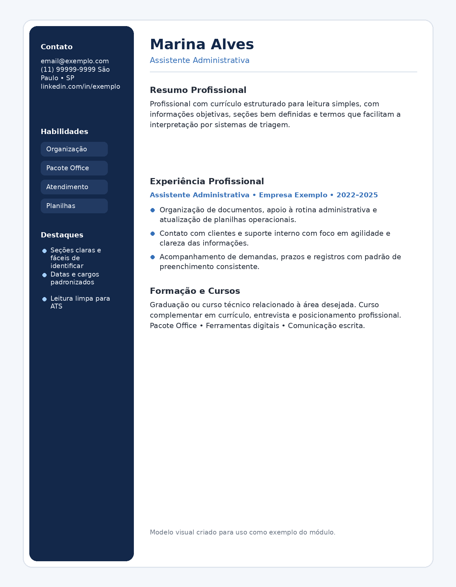
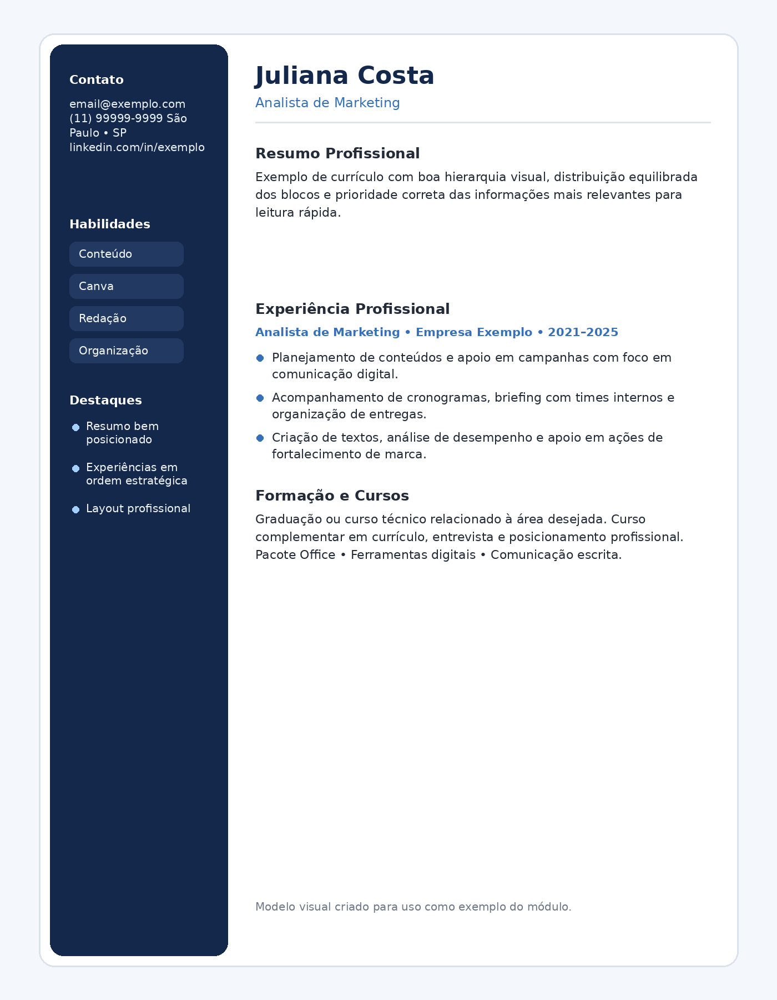
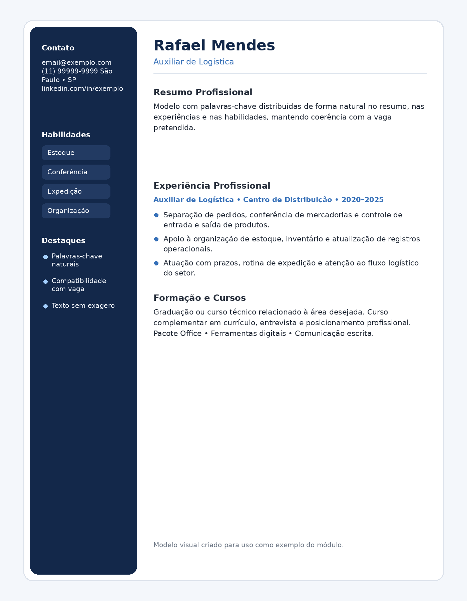

Bem-vindo à sua Área
Carregando seus dados...
Currículo que Vence a IA
Aprenda a montar um currículo mais estratégico, mais forte e mais preparado para os filtros automáticos usados pelas empresas.
Seu progresso
20% concluído
Objetivo do curso
Mostrar como estruturar um currículo mais competitivo, alinhado com vagas e com maior chance de passar pelos sistemas de triagem.
Dica rápida
Um bom currículo não é só bonito. Ele precisa ser claro, estratégico e conter informações que façam sentido para a vaga desejada.
Próximo passo
Vá até a aba de aulas e faça o conteúdo inicial para entender como a IA analisa currículos no processo seletivo.
O que você vai aprender
Este curso foi estruturado para te ajudar a entender como os sistemas de triagem funcionam, como adaptar seu currículo para vagas reais, como destacar experiências com mais força e como construir uma candidatura mais estratégica.
- Como o ATS filtra currículos antes do recrutador
- Como melhorar a estrutura do currículo
- Como usar palavras-chave sem parecer artificial
- Como transformar tarefas em percepção de valor
- Como deixar o currículo mais competitivo para vagas reais
- Como revisar erros que prejudicam sua candidatura
Como avançar no curso
Os módulos seguem uma ordem lógica. Para liberar o próximo módulo, você precisa clicar em “Marcar como concluído” em todas as aulas do módulo atual.
Isso garante uma progressão mais organizada e ajuda você a absorver o conteúdo na sequência certa.
Ao longo do curso, você também encontrará materiais extras em PDF para aprofundar o conteúdo, revisar os pontos mais importantes e aplicar cada aprendizado no seu próprio currículo.
Módulos do curso
Módulo 1 — Como os sistemas analisam currículos
Entenda como ATS, filtros automáticos e leitura por palavras-chave impactam sua candidatura.
- Entender o que é ATS.
- Ver como o sistema lê seu currículo.
- Compreender por que currículos são rejeitados.
- Descobrir o que faz um currículo passar.
- Identificar erros simples que reduzem suas chances.
- Aprender a apresentar informações de forma mais estratégica.
Status do módulo
Progresso do módulo carregando...
Como a IA lê seu currículo
Entenda o funcionamento dos filtros automáticos e como evitar erros básicos. Neste módulo, você vai compreender o que é ATS, como esses sistemas organizam, leem e classificam informações do currículo e por que um documento aparentemente bom pode ser descartado antes mesmo de chegar ao recrutador. Você também vai aprender como tornar suas informações mais claras, objetivas e compatíveis com processos seletivos modernos.

Exemplo visual: neste modelo, o foco está em mostrar um currículo limpo, com títulos claros, seções fáceis de identificar e palavras legíveis para sistemas de triagem.
Estrutura que chama atenção
Aprenda a organizar suas informações de forma limpa, objetiva e profissional. Aqui você vai ver como montar um currículo visualmente equilibrado, fácil de ler e estrategicamente distribuído. Vamos trabalhar ordem das seções, hierarquia das informações, títulos, resumo profissional, experiências, formação e habilidades, para que o documento fique claro tanto para o sistema quanto para o recrutador humano.

Exemplo visual: aqui o destaque está na distribuição correta dos blocos, em uma leitura fluida e em uma apresentação mais profissional e organizada.
Palavras-chave certas
Saiba como adaptar seu currículo para diferentes vagas sem parecer artificial. Neste módulo, você vai aprender a identificar palavras-chave importantes na descrição da vaga, entender como inseri-las no currículo de forma natural e fortalecer a compatibilidade do seu perfil com a oportunidade desejada. A ideia não é copiar e colar termos, mas traduzir sua experiência em uma linguagem mais alinhada ao mercado.

Exemplo visual: este exemplo mostra um currículo adaptado por vaga, com termos estratégicos distribuídos nas experiências, resumo e competências.
Currículo final estratégico
Monte uma versão mais forte do seu currículo com foco em resultado. Este módulo reúne tudo o que foi visto anteriormente para que você finalize um currículo mais competitivo, revisado e pronto para candidatura. Você vai entender como revisar seu documento, ajustar detalhes finais, fortalecer seu posicionamento profissional e evitar erros que passam despercebidos, mas comprometem sua imagem.
Exemplo visual: neste modelo final, o currículo já aparece revisado, com melhor posicionamento, foco em resultado e uma leitura mais forte para o recrutador.
Aula em destaque
Aula 1.1: O que é ATS
Antes de pensar em design, o mais importante é entender como o seu currículo está sendo lido.
Status: conteúdo disponível para conclusão
Conteúdo da aula
Antes de pensar em design, o mais importante é entender como o seu currículo está sendo lido. Muitas vezes, o problema não está na sua experiência, mas na forma como ela é apresentada.
ATS é a sigla para Applicant Tracking System, ou seja, um sistema utilizado por muitas empresas para organizar, filtrar e selecionar currículos durante os processos seletivos. Esses sistemas procuram informações específicas, analisam compatibilidade com a vaga e ajudam a priorizar candidatos.
Isso significa que um currículo bonito visualmente nem sempre será eficiente. Se ele estiver mal organizado, com excesso de elementos, informações vagas, palavras pouco estratégicas ou experiência mal descrita, ele pode perder força logo na primeira triagem.
Nesta aula, você vai entender os erros mais comuns que fazem um currículo perder força no processo seletivo, além de enxergar como pequenos ajustes podem melhorar muito sua apresentação profissional.
Você também vai perceber que passar pelo ATS não depende de "enganar o sistema", e sim de estruturar seu currículo com clareza, coerência e alinhamento com a vaga desejada. Quando suas informações fazem sentido, a leitura fica mais fácil e a sua candidatura ganha mais chances de avançar.
Trilha de aulas — Módulo 1
Clique para abrir ou fechar o conteúdo deste módulo.
Este primeiro módulo prepara a base do curso. A ideia é fazer você entender o ambiente em que o currículo será analisado, quais critérios costumam ser usados pelos sistemas de triagem e por que um currículo confuso perde força mesmo quando o candidato é bom.
- Aula 1.1: O que é ATS e como ele participa do processo seletivo.
- Aula 1.2: Como o sistema identifica cargos, datas, palavras-chave e compatibilidade.
- Aula 1.3: Erros que atrapalham leitura automática, como excesso de design, elementos soltos e textos genéricos.
- Aula 1.4: O que deixa um currículo mais legível, mais forte e mais estratégico para triagem.
Aplicação prática
Ao terminar este módulo, o aluno já deve conseguir olhar para o próprio currículo e identificar o que pode estar atrapalhando a leitura, a organização das informações e a compatibilidade com vagas.
Trilha de aulas — Módulo 2
Clique para abrir ou fechar o conteúdo deste módulo.
No segundo módulo, o foco é organizar o currículo como um documento profissional. Aqui o aluno entende onde cada informação deve ficar, como estruturar os blocos principais e como tornar a leitura mais fluida para recrutadores e sistemas.
- Aula 2.1: Ordem ideal das seções e o que deve aparecer primeiro.
- Aula 2.2: Como escrever um resumo profissional objetivo e convincente.
- Aula 2.3: Como descrever experiências sem parecer genérico.
- Aula 2.4: Como posicionar formação, cursos, habilidades e dados complementares.
Resultado esperado
Ao fim deste módulo, o aluno já terá uma estrutura-base mais limpa, mais clara e pronta para ser refinada com foco em vaga.
Trilha de aulas — Módulo 3
Clique para abrir ou fechar o conteúdo deste módulo.
Neste módulo, o conteúdo aprofunda a adaptação estratégica do currículo. O aluno aprende a ler a vaga com atenção, identificar palavras importantes e transformar a experiência já vivida em uma comunicação mais compatível com o mercado.
- Aula 3.1: Como analisar uma descrição de vaga com olhar estratégico.
- Aula 3.2: Como identificar palavras-chave importantes sem exagero.
- Aula 3.3: Como adaptar resumo, experiências e habilidades para cada oportunidade.
- Aula 3.4: Como evitar exagero, repetição e linguagem artificial.
Resultado esperado
Ao concluir esta etapa, o aluno conseguirá personalizar o currículo para diferentes vagas com mais inteligência e naturalidade.
Trilha de aulas — Módulo 4
Clique para abrir ou fechar o conteúdo deste módulo.
O quarto módulo fecha o curso com revisão estratégica. É o momento de consolidar todo o aprendizado, revisar o currículo com olhar crítico, fortalecer a apresentação final e preparar o documento para candidatura real.
- Aula 4.1: Revisão completa do currículo antes do envio.
- Aula 4.2: Ajustes finais de clareza, objetividade e posicionamento profissional.
- Aula 4.3: Como transformar atividades em valor percebido.
- Aula 4.4: Checklist final para envio com mais segurança.
Resultado esperado
Ao final do curso, o aluno terá um currículo mais forte, melhor estruturado, mais compatível com vagas reais e com maior potencial de avançar.
Aula 1
O que faz um currículo ser ignorado e quais erros mais afastam sua candidatura da próxima etapa.
Aula 2
Como estruturar seu currículo com clareza, lógica e ordem para facilitar a leitura do sistema e do recrutador.
Aula 3
Como usar palavras-chave a seu favor sem deixar o texto artificial, repetitivo ou forçado.
Aula 4
Como destacar experiências, resultados e competências de forma mais estratégica e valorizada pelo mercado.
Aula 5
Revisão prática do currículo: o que manter, o que cortar e o que ajustar antes de começar a enviar.
Materiais de apoio
PDF do Módulo 1
Material complementar com explicação detalhada sobre ATS, triagem automática e leitura estratégica do currículo.
BaixarPDF do Módulo 2
Guia de organização do currículo com foco em clareza, hierarquia de informações e apresentação profissional.
BaixarPDF do Módulo 3
Explicação prática sobre uso de palavras-chave, adaptação por vaga e fortalecimento da compatibilidade do perfil.
BaixarPDF do Módulo 4
Material final para revisão estratégica, ajustes de posicionamento e finalização do currículo.
BaixarComo usar os materiais
Os materiais desta área foram pensados para complementar as aulas e facilitar sua aplicação prática. Você pode usar os PDFs para revisar conceitos, organizar o currículo por etapas e consultar sempre que surgir dúvida.
- Use o checklist antes de enviar seu currículo.
- Use o modelo base como referência estrutural.
- Use os PDFs dos módulos para aprofundar o conteúdo de cada etapa.
- Revise os materiais sempre que adaptar o currículo para uma nova vaga.
Dica de aplicação
Não tente fazer tudo de uma vez. O ideal é revisar módulo por módulo, aplicar os ajustes no currículo e só depois avançar para a próxima etapa. Assim, o seu documento evolui com mais consistência.
Seu perfil
Nome: -
E-mail: -
Celular: -
Data de nascimento: -
Área de interesse: -